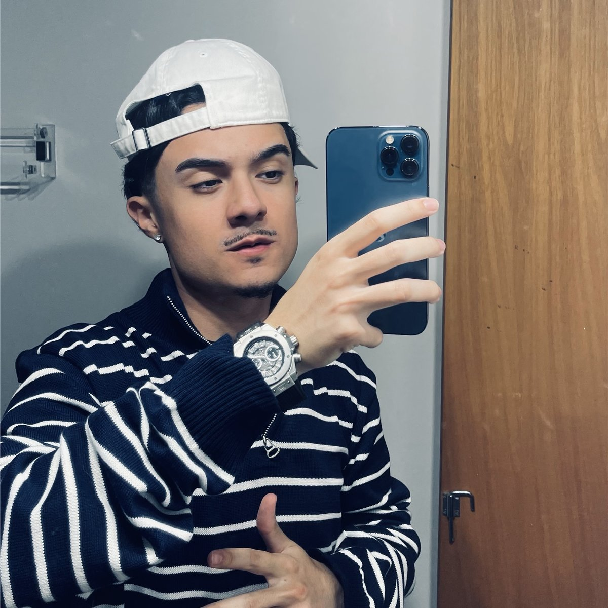
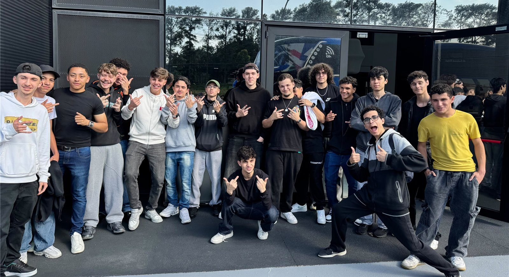

Áreas do Saber
Disciplinas do Ensino Médio, com trabalhos e reflexões.
Ver áreasMeu portfólio pessoal
Este é o meu portfólio do Ensino Médio Técnico. Aqui estão as matérias, os projetos, os trabalhos em grupo e os meus certificados.
Curso: Técnico em Internet das Coisas (IoT)
Turma: 3º ano • Instituição: Senac Nações Unidas

Deslize para os lados ou use as setas para conhecer cada parte do portfólio.
Disciplinas do Ensino Médio, com trabalhos e reflexões.
Ver áreas
Projetos de IoT, programação, redes e banco de dados.
Ver projetos
Formação, habilidades e cinco certificados da Cisco.
Abrir currículo
Visitas técnicas, eventos e trabalhos em equipe.
Ver memórias
A maquete com iluminação de LEDs feita em grupo.
Conhecer projetoCarrossel vertical: use as setas para percorrer as etapas.
Etapa 1
Durante o Ensino Médio no Senac, comecei a descobrir mais sobre tecnologia e IoT. Aprendi sobre redes, programação e dispositivos inteligentes e vi como a tecnologia está presente no nosso cotidiano.
Etapa 2
Comecei a experimentar os conhecimentos por meio de atividades práticas, projetos, pesquisas e trabalhos em grupo. No segundo ano, mais precisamente, tive muito contato com cabos de rede e dispositivos inteligentes e entendi melhor como a tecnologia funciona.
Etapa 3
Com mais conhecimento, passei a desenvolver projetos e soluções usando tecnologia. Trabalhei com programação, sistemas, redes e ferramentas, colocando minhas ideias em prática e desenvolvendo a criatividade.
Etapa 4
Apresentei projetos e troquei ideias com colegas e professores, e isso me ajudou na comunicação e na confiança. No terceiro ano, fiz visitas técnicas em empresas como a Sandvik e vi que cada uma tem o seu jeito de trabalhar.
Quero seguir carreira na área de Administração e desenvolver liderança, organização, comunicação e gestão. Ter estudado IoT no Ensino Médio ampliou minha visão de tecnologia, inovação e resolução de problemas. Pretendo levar esses conhecimentos para o mundo dos negócios e buscar novas oportunidades de crescimento. Levo comigo tudo o que aprendi na tecnologia, mas quero construir meu futuro na Administração.